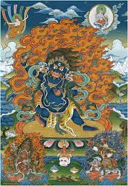

Ваджрапани в переводе означает «держащий ваджру»— в тибетском Буддизме бодхисатва, наряду с Авалокитешварой и Манджушри. Ваджрапани защитник Будды и символ его могущества.
Бодхисаттва Ваджрапани также является хранителем всех учений исцеления. Для практиков тибетского Буддизма Ваджрапани являет себя гневным йидамом, который символизирует победу над всеми негативными проявлениями, разрушающий заблуждения и защищающий высшую Дхарму. Он также представляет способ проявления твердой решимости и символизирует неослабевающую эффективность в покорении невежества.
В иконографии Ваджрапани изображают синего цвета, у него напряженная поза воина лучника, такая поза также напоминает позицию «к бою» в фехтовании. Ваджрапани в своей вытянутой правой руке держит ваджру, а в левой руке лассо, которым он связывает демонов. Бодхисаттва носит корону из черепов, из под которой видны его волосы. У него гневное выражение лица, и четко обозначен третий глаз. Он также имеет змеиное ожерелье и набедренную повязку из шкуры тигра, голова тигра видна у его правого колена.
Мантра Ваджрапани: ОМ ВАДЖРАПАНИ ХУМ ПЕ